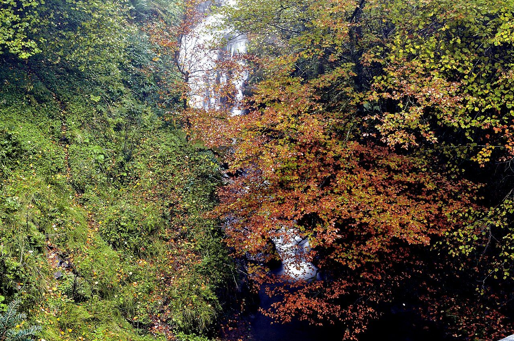

Seres del bosque y de la montaña
Criterios: PC 4.1, PC 2.2
🤔 Pienso5 min
Qué hago aquí: Piensa un momento y contesta con lo que ya sabes. No pasa nada si no lo sabes: es para empezar.
Estás solo en un bosque de hayas al anochecer. Oyes ruidos y ves sombras. ¿Qué te imaginas?
📖 Leo y aprendo15 min
Qué hago aquí: Lee despacio, mira los dibujos y los ejemplos, y quédate con la idea clave del final.
Los bosques, las cuevas y las brañas de Cantabria están llenos de seres. Algunos son buenos, otros malvados y otros, simplemente, traviesos.

Foto: LBM1948 · CC BY-SA 4.0 · Saja-Besaya, otoño 2.jpg
duende del bosque cubierto de musgo y hojas; travieso
duende de la casa, cojo y con gorro rojo; lo revuelve todo
pastor vestido de musgo; canta triste y guía a los perdidos
serpiente con alas que guarda tesoros en las cuevas
✏️ Hago25 min
Qué hago aquí: Haz las actividades en orden. Empieza siempre por las básicas.
Compara la anjana y el Ojáncano en una tabla: aspecto, lugar, acciones, carácter y qué protegen o qué destruyen.
Responde a la mirada de patrimonio: ¿qué nos dicen los seres buenos y malos sobre lo que era valioso para la gente del campo? Da tres ejemplos.
¿Verdadero o falso? Después corrige en tu cuaderno las afirmaciones falsas.
Marca V (verdadero) o F (falso).
El Ojáncano se vence arrancándole el pelo blanco. ¿Qué enseñanza puede esconder esta forma de vencerlo?
Escribe una leyenda breve (10–12 líneas) ambientada en un bosque de Cantabria que conozcas, con un ser de la ficha, un problema real del campo y un final que explique algo del paisaje.
El trasgu revuelve la casa. ¿Qué cosas cotidianas podía servir para explicar? ¿Por qué crees que era útil tener un «culpable» fantástico?
Hoy las anjanas aparecen en logotipos, nombres de tiendas y recuerdos. ¿Es una forma de conservar el patrimonio o de banalizarlo? Argumenta las dos posturas.
🚀 Amplío (si quieres saber más)
Qué hago aquí: ¿Has terminado? Lee la curiosidad o elige el reto. Es voluntario.
Investiga cómo representan a la anjana tres fuentes distintas (un libro antiguo, una ilustración moderna, un producto turístico). Compara las imágenes y explica qué rasgos se mantienen y cuáles se han inventado o cambiado.
✅ Compruebo5 min
Qué hago aquí: Contesta sin mirar la ficha y marca cómo lo llevas.